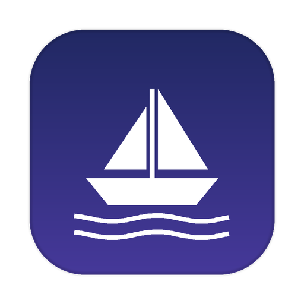

Sermonship Free, from NiceTakeDrop in Sunday's recording. Sermonship transcribes it, writes the study guide, devotionals and quotes, designs the quote cards and cuts the vertical highlight clips — on your own Mac, with nothing uploaded anywhere.
The transcript, ten discussion questions, short and extended summaries, four key quotes and five daily devotionals — each as PDF and Word, ready for a small group or the church newsletter.
Sixteen quote cards in your colours and shape of choice, on generated backgrounds or your own photos, with your logo. Redraw the designs with a click until you like them.
Vertical clips (1080×1920) that follow the speaker, end on a complete thought, and come with and without burned-in subtitles. Ask for a clip about a particular point and it finds it.
A conversation with the sermon itself: where was that illustration, what did the second point mean, give me three questions for the youth group. Plus the whole sermon as an MP3.
The video, the audio, the transcript and everything written from them stay on the Mac. The writing is done by an open model (Gemma) running locally; there is no account, no upload and nothing sent to NiceTake. Sermonship works on a plane.
If you prefer, you can use your own Google Gemini key instead; then only the transcript text is sent to Google, never the video. The app explains this where you turn it on.
Sermonship checks for new versions itself and offers to install them (Sermonship menu › Check for Updates…). Updates never touch your sermons or settings.